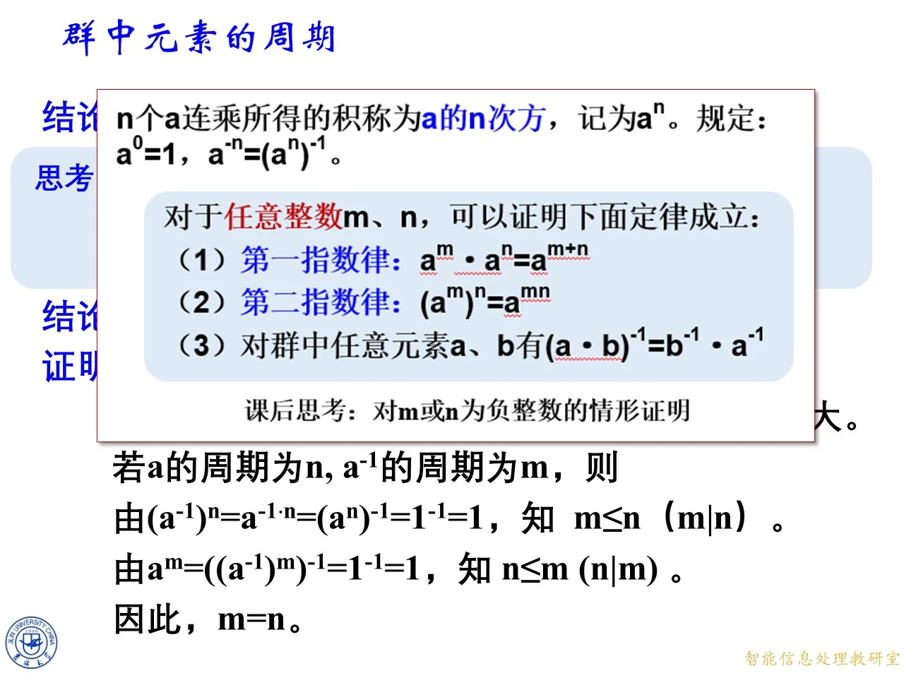
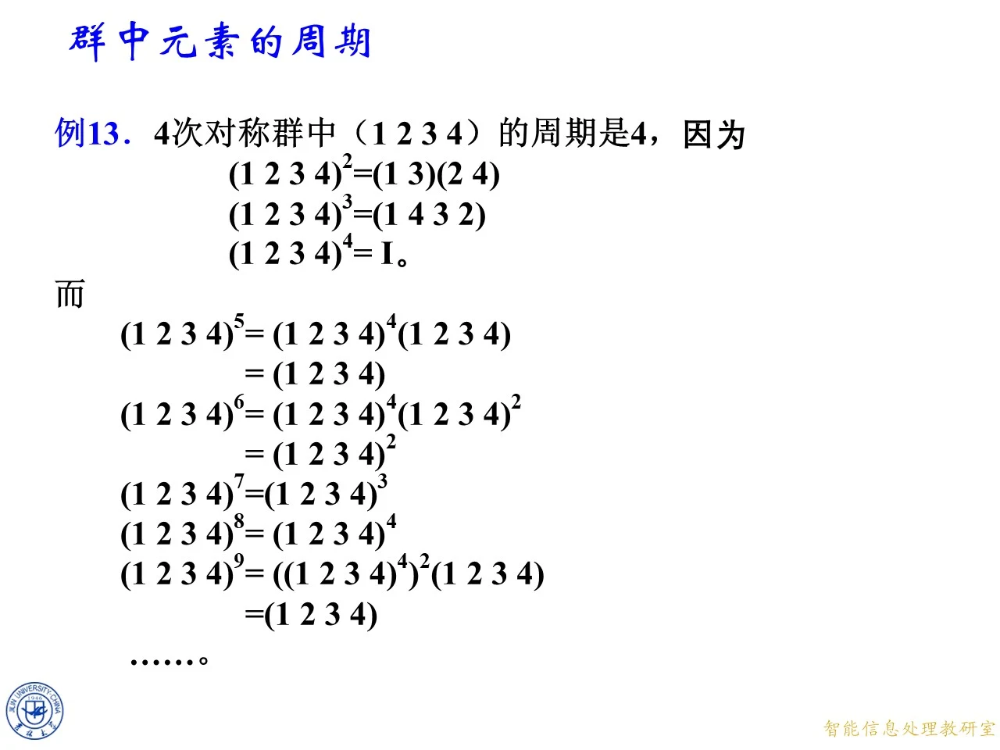

本课研究群中每个元素"多少次运算后回到单位元"的问题，这个最小正次数叫做元素的周期，也叫元素的阶，是 8.1"群"这一节的核心概念，后面讲循环群、子群与拉格朗日定理都要以它为基础。课件分成两大板块：先给出周期的定义，并在各种具体群中反复练习计算（对应网站目录"元素的周期"主题）；再证明周期的三条基本定理，讨论逆元的周期、加法群记号等性质（对应目录"群中元素的周期"主题）。这两个目录主题共用同一批课件页（11月4日授课第 158 至 242 页），本篇按课件原页顺序一并讲完，页块分成对应的两段。
元素的周期
◆ p.158-162 ｜元素的周期：定义（参见《信安》教材定义 9.1.1）
定义：对于群中的元素 a a a a k = e a^k=e a k = e k k k a a a 周期 （也称为 a a a 阶 ）；若不存在这样的 k k k a a a 0 0 0 ∞ \infty ∞ a a a ord ( a ) \operatorname{ord}(a) ord ( a )
三点解释。第一，e e e a k a^k a k k k k a a a k k k a a a 0 0 0 不存在 任何正次数回到单位元（即无限阶），它不是说 a 0 = e a^0=e a 0 = e a 0 = 1 a^0=1 a 0 = 1
课件随后给出三组练习，答案如下（全部经 python 复算）。
模 6 加法群 ( Z 6 , + 6 ) (\mathbb{Z}_6,+_6) ( Z 6 , + 6 ) k k k a a a k a ka ka a a a k k k k k k k a ≡ 0 ( m o d 6 ) ka\equiv0\pmod 6 ka ≡ 0 ( mod 6 ) 6 × 1 ≡ 0 6\times1\equiv0 6 × 1 ≡ 0 2 × 3 = 6 ≡ 0 2\times3=6\equiv0 2 × 3 = 6 ≡ 0 2 × 1 = 2 2\times1=2 2 × 1 = 2 2 × 2 = 4 2\times2=4 2 × 2 = 4 3 × 2 = 6 ≡ 0 3\times2=6\equiv0 3 × 2 = 6 ≡ 0 4 × 3 = 12 ≡ 0 4\times3=12\equiv0 4 × 3 = 12 ≡ 0
模 7 加法群 ( Z 7 , + 7 ) (\mathbb{Z}_7,+_7) ( Z 7 , + 7 ) k a ≡ 0 ( m o d 7 ) ka\equiv0\pmod 7 ka ≡ 0 ( mod 7 ) 7 ∤ a 7\nmid a 7 ∤ a 7 ∣ k 7\mid k 7 ∣ k
实数加法群 ( R , + ) (\mathbb{R},+) ( R , + ) ∞ \infty ∞
拓展 （课件外补充）：在模 n n n Z n \mathbb{Z}_n Z n a a a n gcd ( n , a ) \frac{n}{\gcd(n,a)} g c d ( n , a ) n k a ≡ 0 ( m o d n ) ka\equiv0\pmod n ka ≡ 0 ( mod n ) n ∣ k a n\mid ka n ∣ ka n ∣ k a n\mid ka n ∣ ka n gcd ( n , a ) ∣ k \frac{n}{\gcd(n,a)}\mid k g c d ( n , a ) n ∣ k n gcd ( n , a ) \frac{n}{\gcd(n,a)} g c d ( n , a ) n Z 6 \mathbb{Z}_6 Z 6 gcd \gcd g cda t = e a^t=e a t = e k k k t t t t t t Z 6 \mathbb{Z}_6 Z 6 6 × 1 = 0 6\times1=0 6 × 1 = 0 12 × 1 = 0 12\times1=0 12 × 1 = 0
◆ p.163-167 ｜整数加法群与乘法群 { 1 , − 1 } \{1,-1\} { 1 , − 1 }
整数加法群 ( Z , + ) (\mathbb{Z},+) ( Z , + ) ∞ \infty ∞ a a a k a = 0 ka=0 ka = 0 k = 0 k=0 k = 0
群 ( { 1 , − 1 } , × ) (\{1,-1\},\times) ({ 1 , − 1 } , × ) − 1 -1 − 1 ( − 1 ) 1 = − 1 ≠ 1 (-1)^1=-1\ne1 ( − 1 ) 1 = − 1 = 1 ( − 1 ) 2 = 1 (-1)^2=1 ( − 1 ) 2 = 1
◆ p.168-172 ｜乘法群 { 1 , − 1 , i , − i } \{1,-1,i,-i\} { 1 , − 1 , i , − i }
单位元 1 的周期为 1，元素 − 1 -1 − 1 i i i − i -i − i i 1 = i ≠ 1 i^1=i\ne1 i 1 = i = 1 i 2 = − 1 ≠ 1 i^2=-1\ne1 i 2 = − 1 = 1 i 3 = − i ≠ 1 i^3=-i\ne1 i 3 = − i = 1 i 4 = ( i 2 ) 2 = ( − 1 ) 2 = 1 i^4=(i^2)^2=(-1)^2=1 i 4 = ( i 2 ) 2 = ( − 1 ) 2 = 1 ord ( i ) = 4 \operatorname{ord}(i)=4 ord ( i ) = 4 ( − i ) 2 = i 2 = − 1 (-i)^2=i^2=-1 ( − i ) 2 = i 2 = − 1 ord ( − i ) = 4 \operatorname{ord}(-i)=4 ord ( − i ) = 4 i i i 1 , i , − 1 , − i 1,i,-1,-i 1 , i , − 1 , − i i i i − i -i − i
拓展 （课件外补充）：i − 1 = − i i^{-1}=-i i − 1 = − i i i i − i -i − i
◆ p.173-178 ｜模 m m m
模 m m m Z m \mathbb{Z}_m Z m a a a 使合同方程 a x ≡ 0 ( m o d m ) ax\equiv0\pmod m a x ≡ 0 ( mod m ) x x x 。这句话正是前面例题做法的一般化：在加法群里求周期就是解一个同余方程，取最小正解（可用上面拓展里的公式 m gcd ( m , a ) \frac{m}{\gcd(m,a)} g c d ( m , a ) m
Klein 四元群：课件给出运算表，e e e a , b , c a,b,c a , b , c a ⋅ a = e a\cdot a=e a ⋅ a = e b ⋅ b = e b\cdot b=e b ⋅ b = e c ⋅ c = e c\cdot c=e c ⋅ c = e e e e a ⋅ b = c a\cdot b=c a ⋅ b = c a ⋅ c = b a\cdot c=b a ⋅ c = b b ⋅ c = a b\cdot c=a b ⋅ c = a a , b , c a,b,c a , b , c e e e
拓展 （课件外补充）：Klein 四元群是最小的"所有非单位元同阶"的群。对比同样只有 4 个元素的 Z 4 \mathbb{Z}_4 Z 4
◆ p.179-184 ｜模 7 简化剩余系乘法群 F 7 F_7 F 7
模 7 简化剩余系乘法群 F 7 = ( Z 7 ∗ , × ) F_7=(\mathbb{Z}_7^*,\times) F 7 = ( Z 7 ∗ , × ) ord ( a ) \operatorname{ord}(a) ord ( a )
ord ( 1 ) = 1 \operatorname{ord}(1)=1 ord ( 1 ) = 1 ord ( 2 ) = 3 \operatorname{ord}(2)=3 ord ( 2 ) = 3 2 1 = 2 2^1=2 2 1 = 2 2 2 = 4 2^2=4 2 2 = 4 2 3 = 8 ≡ 1 ( m o d 7 ) 2^3=8\equiv1\pmod 7 2 3 = 8 ≡ 1 ( mod 7 ) ord ( 3 ) = 6 \operatorname{ord}(3)=6 ord ( 3 ) = 6 3 2 = 9 ≡ 2 3^2=9\equiv2 3 2 = 9 ≡ 2 3 3 = 27 ≡ 6 3^3=27\equiv6 3 3 = 27 ≡ 6 3 6 = ( 3 3 ) 2 = 36 ≡ 1 3^6=(3^3)^2=36\equiv1 3 6 = ( 3 3 ) 2 = 36 ≡ 1 3 1 , 3 2 , 3 3 3^1,3^2,3^3 3 1 , 3 2 , 3 3 ord ( 4 ) = 3 \operatorname{ord}(4)=3 ord ( 4 ) = 3 4 2 = 16 ≡ 2 4^2=16\equiv2 4 2 = 16 ≡ 2 4 3 = 64 ≡ 1 4^3=64\equiv1 4 3 = 64 ≡ 1 2 2 2^2 2 2 ord ( 5 ) = 6 \operatorname{ord}(5)=6 ord ( 5 ) = 6 5 2 = 25 ≡ 4 5^2=25\equiv4 5 2 = 25 ≡ 4 5 3 = 125 ≡ 6 5^3=125\equiv6 5 3 = 125 ≡ 6 5 6 = ( 5 3 ) 2 = 36 ≡ 1 5^6=(5^3)^2=36\equiv1 5 6 = ( 5 3 ) 2 = 36 ≡ 1 5 1 , 5 2 , 5 3 5^1,5^2,5^3 5 1 , 5 2 , 5 3
第 6 列此时还空着，在下一页填出。
◆ p.185-193 ｜F 7 F_7 F 7 F 7 F_7 F 7
补上最后一列：ord ( 6 ) = 2 \operatorname{ord}(6)=2 ord ( 6 ) = 2 6 2 = 36 ≡ 1 ( m o d 7 ) 6^2=36\equiv1\pmod 7 6 2 = 36 ≡ 1 ( mod 7 ) 6 1 = 6 ≠ 1 6^1=6\ne1 6 1 = 6 = 1
a a a 1
2
3
4
5
6
ord ( a ) \operatorname{ord}(a) ord ( a ) 1
3
6
3
6
2
课件由此指出：F 7 F_7 F 7 φ ( φ ( 7 ) ) \varphi(\varphi(7)) φ ( φ ( 7 )) φ ( 7 ) = 6 \varphi(7)=6 φ ( 7 ) = 6 φ ( φ ( 7 ) ) = φ ( 6 ) = 2 \varphi(\varphi(7))=\varphi(6)=2 φ ( φ ( 7 )) = φ ( 6 ) = 2
课件随后整页回顾《信安》教材的定义 5.1.1（指数） ：设 m > 1 m>1 m > 1 a a a m m m a e ≡ 1 ( m o d m ) a^e\equiv1\pmod m a e ≡ 1 ( mod m ) e e e a a a m m m ord m ( a ) \operatorname{ord}_m(a) ord m ( a ) a a a m m m φ ( m ) \varphi(m) φ ( m ) a a a m m m m m m
例 5 ：设 m = 15 m=15 m = 15 φ ( 15 ) = 8 \varphi(15)=8 φ ( 15 ) = 8 a = 1 , 2 , 4 , 7 , 8 , 11 , 13 , 14 a=1,2,4,7,8,11,13,14 a = 1 , 2 , 4 , 7 , 8 , 11 , 13 , 14
a a a 1
2
4
7
8
11
13
14
ord 15 ( a ) \operatorname{ord}_{15}(a) ord 15 ( a ) 1
4
2
4
4
2
4
2
抽验：2 4 = 16 ≡ 1 ( m o d 15 ) 2^4=16\equiv1\pmod{15} 2 4 = 16 ≡ 1 ( mod 15 ) 2 2 = 4 ≠ 1 2^2=4\ne1 2 2 = 4 = 1 ord 15 ( 2 ) = 4 \operatorname{ord}_{15}(2)=4 ord 15 ( 2 ) = 4 7 2 = 49 ≡ 4 7^2=49\equiv4 7 2 = 49 ≡ 4 7 4 = 4 2 = 16 ≡ 1 7^4=4^2=16\equiv1 7 4 = 4 2 = 16 ≡ 1 ord 15 ( 7 ) = 4 \operatorname{ord}_{15}(7)=4 ord 15 ( 7 ) = 4 φ ( 15 ) = 8 \varphi(15)=8 φ ( 15 ) = 8 模 15 的原根不存在 。
◆ p.194 ｜周期表全貌、φ ( φ ( 7 ) ) \varphi(\varphi(7)) φ ( φ ( 7 ))
本页给出 F 7 F_7 F 7 φ ( φ ( 7 ) ) \varphi(\varphi(7)) φ ( φ ( 7 )) F 15 F_{15} F 15
拓展 （课件外补充）：思考题解答。F 15 F_{15} F 15 a b ≡ b a ( m o d 15 ) ab\equiv ba\pmod{15} ab ≡ ba ( mod 15 ) Z 15 ∗ \mathbb{Z}_{15}^* Z 15 ∗ φ ( 15 ) = 8 \varphi(15)=8 φ ( 15 ) = 8 F 7 F_7 F 7 F 15 F_{15} F 15

课件原图 · 第八章-4-原版（合并来源第 208 页 / 本份第 208 页） · 第 208 页 查看前后已收录原页 → 群中元素的周期
◆ p.195-197 ｜单位元的周期；幂的记号与三条指数律
结论：群的单位元的周期为 1。理由：e 1 = e e^1=e e 1 = e
课件在本页提出贯穿后几页的思考：如果群 G G G a a a a − 1 a^{-1} a − 1 n n n a a a a a a n n n a n a^n a n a 0 = 1 a^0=1 a 0 = 1 a − n = ( a n ) − 1 a^{-n}=(a^n)^{-1} a − n = ( a n ) − 1 任意整数 m , n m,n m , n a m ⋅ a n = a m + n a^m\cdot a^n=a^{m+n} a m ⋅ a n = a m + n ( a m ) n = a m n (a^m)^n=a^{mn} ( a m ) n = a mn a , b a,b a , b ( a ⋅ b ) − 1 = b − 1 ⋅ a − 1 (a\cdot b)^{-1}=b^{-1}\cdot a^{-1} ( a ⋅ b ) − 1 = b − 1 ⋅ a − 1 m m m n n n
◆ p.198-199 ｜思考展开：会不会是 2？会不会是 4？应该是？
课件把思考题分三步追问：a − 1 a^{-1} a − 1 ( a − 1 ) 2 (a^{-1})^2 ( a − 1 ) 2 ( a − 1 ) 4 (a^{-1})^4 ( a − 1 ) 4 ord ( a ) = 3 \operatorname{ord}(a)=3 ord ( a ) = 3 ( a − 1 ) t = 1 (a^{-1})^t=1 ( a − 1 ) t = 1 ( a − 1 ) t = ( a t ) − 1 (a^{-1})^t=(a^t)^{-1} ( a − 1 ) t = ( a t ) − 1 a t = 1 a^t=1 a t = 1 a − 1 a^{-1} a − 1 a a a 条件完全相同 。由 ord ( a ) = 3 \operatorname{ord}(a)=3 ord ( a ) = 3 a t = 1 a^t=1 a t = 1 3 ∣ t 3\mid t 3 ∣ t ( a − 1 ) t = 1 (a^{-1})^t=1 ( a − 1 ) t = 1 3 ∣ t 3\mid t 3 ∣ t
◆ p.200-202 ｜思考一般化：周期为 k k k k k k
把问题一般化：若 ord ( a ) = k \operatorname{ord}(a)=k ord ( a ) = k a − 1 a^{-1} a − 1 k k k k k k ( a − 1 ) t = 1 (a^{-1})^t=1 ( a − 1 ) t = 1 a t = 1 a^t=1 a t = 1 k ∣ t k\mid t k ∣ t t t t k k k k k k k k k
◆ p.203-207 ｜思考无限阶情形；结论"元素与逆元同周期"及证明的开头（p.203-207 为同一张幻灯片的动画帧）
课件最后问：如果 a a a a − 1 a^{-1} a − 1
结论 ：群中任一元素和它的逆元具有同样的周期。
证明（第一半，课件原文） ：若 a a a a − 1 a^{-1} a − 1 t t t ( a − 1 ) t = 1 (a^{-1})^t=1 ( a − 1 ) t = 1 a − n = ( a n ) − 1 a^{-n}=(a^n)^{-1} a − n = ( a n ) − 1 ( a − 1 ) t = ( a t ) − 1 (a^{-1})^t=(a^t)^{-1} ( a − 1 ) t = ( a t ) − 1 a t = 1 a^t=1 a t = 1 a a a a − 1 a^{-1} a − 1
证明（第二半的开头） ：若 a a a n n n a − 1 a^{-1} a − 1 m m m
◆ p.208 ｜证明补全：m = n m=n m = n
本页课件把指数律框图叠放展示，并完成有限阶情形的证明。由 ( a − 1 ) n = a − 1 ⋅ n = ( a n ) − 1 = 1 − 1 = 1 (a^{-1})^n=a^{-1\cdot n}=(a^n)^{-1}=1^{-1}=1 ( a − 1 ) n = a − 1 ⋅ n = ( a n ) − 1 = 1 − 1 = 1 m ≤ n m\le n m ≤ n m ∣ n m\mid n m ∣ n a − 1 ⋅ n = a − n = ( a n ) − 1 a^{-1\cdot n}=a^{-n}=(a^n)^{-1} a − 1 ⋅ n = a − n = ( a n ) − 1 n n n a − 1 a^{-1} a − 1 a − 1 a^{-1} a − 1 m m m n n n a m = ( ( a − 1 ) m ) − 1 = 1 − 1 = 1 a^m=((a^{-1})^m)^{-1}=1^{-1}=1 a m = (( a − 1 ) m ) − 1 = 1 − 1 = 1 n ≤ m n\le m n ≤ m n ∣ m n\mid m n ∣ m m = n m=n m = n
回到三页追问的答案：ord ( a ) = 3 \operatorname{ord}(a)=3 ord ( a ) = 3 ord ( a − 1 ) = 3 \operatorname{ord}(a^{-1})=3 ord ( a − 1 ) = 3 ord ( a ) = k \operatorname{ord}(a)=k ord ( a ) = k ord ( a − 1 ) = k \operatorname{ord}(a^{-1})=k ord ( a − 1 ) = k a a a a − 1 a^{-1} a − 1
拓展 （课件外补充）：课后思考——把三条定律补证到负整数情形。(1) 第一指数律：m , n ≥ 0 m,n\ge0 m , n ≥ 0 n = − t < 0 n=-t<0 n = − t < 0 a m ⋅ a − t = a m ⋅ ( a t ) − 1 a^m\cdot a^{-t}=a^m\cdot(a^t)^{-1} a m ⋅ a − t = a m ⋅ ( a t ) − 1 m ≥ t m\ge t m ≥ t a m = a m − t ⋅ a t a^m=a^{m-t}\cdot a^t a m = a m − t ⋅ a t a m − t ⋅ ( a t ⋅ ( a t ) − 1 ) = a m − t = a m + n a^{m-t}\cdot\bigl(a^t\cdot(a^t)^{-1}\bigr)=a^{m-t}=a^{m+n} a m − t ⋅ ( a t ⋅ ( a t ) − 1 ) = a m − t = a m + n m < t m<t m < t ( a t − m ) − 1 = a m + n (a^{t-m})^{-1}=a^{m+n} ( a t − m ) − 1 = a m + n m , n m,n m , n ( a s ) − 1 ( a t ) − 1 = ( a t a s ) − 1 = ( a s + t ) − 1 = a − ( s + t ) (a^s)^{-1}(a^t)^{-1}=(a^t a^s)^{-1}=(a^{s+t})^{-1}=a^{-(s+t)} ( a s ) − 1 ( a t ) − 1 = ( a t a s ) − 1 = ( a s + t ) − 1 = a − ( s + t ) n = − t < 0 n=-t<0 n = − t < 0 ( a m ) − t = ( ( a m ) t ) − 1 = ( a m t ) − 1 = a − m t = a m n (a^m)^{-t}=((a^m)^t)^{-1}=(a^{mt})^{-1}=a^{-mt}=a^{mn} ( a m ) − t = (( a m ) t ) − 1 = ( a m t ) − 1 = a − m t = a mn ( a ⋅ b ) − 1 = b − 1 ⋅ a − 1 (a\cdot b)^{-1}=b^{-1}\cdot a^{-1} ( a ⋅ b ) − 1 = b − 1 ⋅ a − 1 ( b − 1 a − 1 ) ( a b ) = b − 1 ( a − 1 a ) b = b − 1 e b = 1 \bigl(b^{-1}a^{-1}\bigr)(ab)=b^{-1}\bigl(a^{-1}a\bigr)b=b^{-1}eb=1 ( b − 1 a − 1 ) ( ab ) = b − 1 ( a − 1 a ) b = b − 1 e b = 1 ( a b ) ( b − 1 a − 1 ) = 1 (ab)\bigl(b^{-1}a^{-1}\bigr)=1 ( ab ) ( b − 1 a − 1 ) = 1 a b ab ab
◆ p.209-218 ｜周期的基本定理与 Z 7 ∗ \mathbb{Z}_7^* Z 7 ∗
定理 ：若群 G G G a a a k k k 1 , a , a 2 , a 3 , … , a k − 1 1,a,a^2,a^3,\ldots,a^{k-1} 1 , a , a 2 , a 3 , … , a k − 1 k k k a m = 1 a^m=1 a m = 1 k ∣ m k\mid m k ∣ m a s = a t a^s=a^t a s = a t k ∣ ( s − t ) k\mid(s-t) k ∣ ( s − t )
课件用模 7 简化剩余系乘法群 ( Z 7 ∗ , × ) (\mathbb{Z}_7^*,\times) ( Z 7 ∗ , × ) a = 2 a=2 a = 2 … , 2 − 2 , 2 − 1 , 2 0 , 2 1 , 2 2 , … , 2 10 \ldots,2^{-2},2^{-1},2^0,2^1,2^2,\ldots,2^{10} … , 2 − 2 , 2 − 1 , 2 0 , 2 1 , 2 2 , … , 2 10 2 , 4 , 1 , 2 , 4 , 1 , 2 , 4 , 1 , 2 , 4 , 1 , 2 2,4,1,2,4,1,2,4,1,2,4,1,2 2 , 4 , 1 , 2 , 4 , 1 , 2 , 4 , 1 , 2 , 4 , 1 , 2 2 − 1 = 4 2^{-1}=4 2 − 1 = 4 2 × 4 = 8 ≡ 1 ( m o d 7 ) 2\times4=8\equiv1\pmod 7 2 × 4 = 8 ≡ 1 ( mod 7 ) 2 − 2 = ( 2 − 1 ) 2 = 16 ≡ 2 2^{-2}=(2^{-1})^2=16\equiv2 2 − 2 = ( 2 − 1 ) 2 = 16 ≡ 2 元素 2 的周期是 3 ：2 0 = 1 , 2 3 = 1 , 2 6 = 1 , 2 9 = 1 2^0=1,2^3=1,2^6=1,2^9=1 2 0 = 1 , 2 3 = 1 , 2 6 = 1 , 2 9 = 1 a m = 1 a^m=1 a m = 1 k ∣ m k\mid m k ∣ m k = 3 k=3 k = 3 2 0 , 2 1 , 2 2 2^0,2^1,2^2 2 0 , 2 1 , 2 2 1 , 2 , 4 1,2,4 1 , 2 , 4 a s = a t a^s=a^t a s = a t k ∣ ( s − t ) k\mid(s-t) k ∣ ( s − t ) 2 − 1 = 4 = 2 2 2^{-1}=4=2^2 2 − 1 = 4 = 2 2 − 1 − 2 = − 3 -1-2=-3 − 1 − 2 = − 3 2 10 = 2 2^{10}=2 2 10 = 2 10 − 1 = 9 10-1=9 10 − 1 = 9
◆ p.219-227 ｜定理的证明：先证（2）（p.219-227 为同一证明的逐步展示）
证明先证（2）。任意整数 m m m m = k q + r m=kq+r m = k q + r 0 ≤ r < k 0\le r<k 0 ≤ r < k q q q r r r
a m = a k q + r = a k q a r = ( a k ) q a r = 1 q a r = 1 ⋅ a r = a r a^m=a^{kq+r}=a^{kq}a^r=(a^k)^q a^r=1^q a^r=1\cdot a^r=a^r a m = a k q + r = a k q a r = ( a k ) q a r = 1 q a r = 1 ⋅ a r = a r
逐步理由：第一指数律把幂拆成 a k q a r a^{kq}a^r a k q a r a k q a^{kq} a k q ( a k ) q (a^k)^q ( a k ) q a k = 1 a^k=1 a k = 1 ( a k ) q = 1 q = 1 (a^k)^q=1^q=1 ( a k ) q = 1 q = 1 0 ≤ r < k 0\le r<k 0 ≤ r < k a r = 1 a^r=1 a r = 1 r = 0 r=0 r = 0 r = 0 r=0 r = 0 a 0 = 1 a^0=1 a 0 = 1 1 ≤ r < k 1\le r<k 1 ≤ r < k a r = 1 a^r=1 a r = 1 k k k k k k a m = 1 a^m=1 a m = 1 r = 0 r=0 r = 0 r = 0 r=0 r = 0 m = k q m=kq m = k q k ∣ m k\mid m k ∣ m
◆ p.228-230 ｜再证（3）
再证（3）。由（2）即知
a s = a t ⟺ a s − t = 1 ⟺ k ∣ ( s − t ) a^s=a^t\ \iff\ a^{s-t}=1\ \iff\ k\mid(s-t) a s = a t ⟺ a s − t = 1 ⟺ k ∣ ( s − t )
第一个等价号的理由：把 a s = a t a^s=a^t a s = a t a − t a^{-t} a − t a t a^t a t a s ⋅ a − t = a s − t a^s\cdot a^{-t}=a^{s-t} a s ⋅ a − t = a s − t ( a t ) − 1 = a − t (a^t)^{-1}=a^{-t} ( a t ) − 1 = a − t a − t a^{-t} a − t
◆ p.231-233 ｜最后由（3）立即可得（1）
最后由（3）立即可得（1）。把（3）取否命题：a s ≠ a t a^s\ne a^t a s = a t k ∤ ( s − t ) k\nmid(s-t) k ∤ ( s − t ) k k k 1 , a , a 2 , … , a k − 1 1,a,a^2,\ldots,a^{k-1} 1 , a , a 2 , … , a k − 1 s , t s,t s , t 0 ≤ s < t ≤ k − 1 0\le s<t\le k-1 0 ≤ s < t ≤ k − 1 0 < t − s < k 0<t-s<k 0 < t − s < k k k k k k k a s ≠ a t a^s\ne a^t a s = a t k k k
拓展 （课件外补充）：三条结论合起来还说明：a a a a m a^m a m 1 , a , … , a k − 1 1,a,\ldots,a^{k-1} 1 , a , … , a k − 1 a m = a r a^m=a^r a m = a r { 1 , a , … , a k − 1 } \{1,a,\ldots,a^{k-1}\} { 1 , a , … , a k − 1 } a a a a a a k k k
◆ p.234-239 ｜例 13：4 次对称群中 ( 1 2 3 4 ) (1\,2\,3\,4) ( 1 2 3 4 )
例 13 ：4 次对称群中，轮换 ( 1 2 3 4 ) (1\,2\,3\,4) ( 1 2 3 4 )
( 1 2 3 4 ) 2 = ( 1 3 ) ( 2 4 ) , ( 1 2 3 4 ) 3 = ( 1 4 3 2 ) , ( 1 2 3 4 ) 4 = I (1\,2\,3\,4)^2=(1\,3)(2\,4),\qquad (1\,2\,3\,4)^3=(1\,4\,3\,2),\qquad (1\,2\,3\,4)^4=I ( 1 2 3 4 ) 2 = ( 1 3 ) ( 2 4 ) , ( 1 2 3 4 ) 3 = ( 1 4 3 2 ) , ( 1 2 3 4 ) 4 = I
其中 I I I 1 ↦ 3 , 2 ↦ 4 , 3 ↦ 1 , 4 ↦ 2 1\mapsto3,2\mapsto4,3\mapsto1,4\mapsto2 1 ↦ 3 , 2 ↦ 4 , 3 ↦ 1 , 4 ↦ 2 ( 1 3 ) ( 2 4 ) (1\,3)(2\,4) ( 1 3 ) ( 2 4 ) ( 1 2 3 4 ) 2 (1\,2\,3\,4)^2 ( 1 2 3 4 ) 2 ( 1 4 3 2 ) (1\,4\,3\,2) ( 1 4 3 2 ) I I I I I I
( 1 2 3 4 ) 5 = ( 1 2 3 4 ) 4 ( 1 2 3 4 ) = ( 1 2 3 4 ) (1\,2\,3\,4)^5=(1\,2\,3\,4)^4(1\,2\,3\,4)=(1\,2\,3\,4) ( 1 2 3 4 ) 5 = ( 1 2 3 4 ) 4 ( 1 2 3 4 ) = ( 1 2 3 4 ) ( 1 2 3 4 ) 6 = ( 1 2 3 4 ) 4 ( 1 2 3 4 ) 2 = ( 1 2 3 4 ) 2 = ( 1 3 ) ( 2 4 ) (1\,2\,3\,4)^6=(1\,2\,3\,4)^4(1\,2\,3\,4)^2=(1\,2\,3\,4)^2=(1\,3)(2\,4) ( 1 2 3 4 ) 6 = ( 1 2 3 4 ) 4 ( 1 2 3 4 ) 2 = ( 1 2 3 4 ) 2 = ( 1 3 ) ( 2 4 ) ( 1 2 3 4 ) 7 = ( 1 2 3 4 ) 3 = ( 1 4 3 2 ) (1\,2\,3\,4)^7=(1\,2\,3\,4)^3=(1\,4\,3\,2) ( 1 2 3 4 ) 7 = ( 1 2 3 4 ) 3 = ( 1 4 3 2 ) ( 1 2 3 4 ) 8 = ( 1 2 3 4 ) 4 = I (1\,2\,3\,4)^8=(1\,2\,3\,4)^4=I ( 1 2 3 4 ) 8 = ( 1 2 3 4 ) 4 = I ( 1 2 3 4 ) 9 = ( ( 1 2 3 4 ) 4 ) 2 ( 1 2 3 4 ) = ( 1 2 3 4 ) (1\,2\,3\,4)^9=\bigl((1\,2\,3\,4)^4\bigr)^2(1\,2\,3\,4)=(1\,2\,3\,4) ( 1 2 3 4 ) 9 = ( ( 1 2 3 4 ) 4 ) 2 ( 1 2 3 4 ) = ( 1 2 3 4 )
以上结果均用 python 把置换当作映射逐幂复合复算一致（例如 a 2 a^2 a 2 ( 1 3 ) ( 2 4 ) (1\,3)(2\,4) ( 1 3 ) ( 2 4 ) a 3 a^3 a 3 ( 1 4 3 2 ) (1\,4\,3\,2) ( 1 4 3 2 )
拓展 （课件外补充）：一般规律：一个 r r r r r r ( 1 2 3 ) ( 4 5 ) (1\,2\,3)(4\,5) ( 1 2 3 ) ( 4 5 ) lcm ( 3 , 2 ) = 6 \operatorname{lcm}(3,2)=6 lcm ( 3 , 2 ) = 6 r = 4 r=4 r = 4 k k k a k q + r = a r a^{kq+r}=a^r a k q + r = a r
◆ p.240-242 ｜加法群中的周期与定理'
在加法群中，a i a^i a i i a ia ia k k k k a = 0 ka=0 ka = 0 a a a k k k k k k a a a 满足交换律的一种抽象运算 ，不一定是普通加法。
定理' （前面定理的加法版本）：若加法群中 a a a k k k 0 , a , 2 a , … , ( k − 1 ) a 0,a,2a,\ldots,(k-1)a 0 , a , 2 a , … , ( k − 1 ) a k k k m a = 0 ma=0 ma = 0 k ∣ m k\mid m k ∣ m s a = t a sa=ta s a = t a k ∣ ( s − t ) k\mid(s-t) k ∣ ( s − t )
它就是把乘法记号逐条翻译过来：a m = 1 a^m=1 a m = 1 m a = 0 ma=0 ma = 0 a s = a t a^s=a^t a s = a t s a = t a sa=ta s a = t a 1 , a , … , a k − 1 1,a,\ldots,a^{k-1} 1 , a , … , a k − 1 0 , a , … , ( k − 1 ) a 0,a,\ldots,(k-1)a 0 , a , … , ( k − 1 ) a m = k q + r m=kq+r m = k q + r m a = q ( k a ) + r a = r a ma=q(ka)+ra=ra ma = q ( ka ) + r a = r a k k k r a = 0 ra=0 r a = 0 r = 0 r=0 r = 0 s a = t a sa=ta s a = t a − t a -ta − t a a − t a^{-t} a − t ( s − t ) a = 0 (s-t)a=0 ( s − t ) a = 0
拓展 （课件外补充）：把（2'）用在模 n n n Z n \mathbb{Z}_n Z n a ˉ \bar a a ˉ n ∣ k a n\mid ka n ∣ ka k k k ord ( a ˉ ) = n gcd ( n , a ) \operatorname{ord}(\bar a)=\frac{n}{\gcd(n,a)} ord ( a ˉ ) = g c d ( n , a ) n Z 6 \mathbb{Z}_6 Z 6 m a = 0 ma=0 ma = 0 k ∣ m k\mid m k ∣ m 全部 使幂为单位元的次数，而周期只是其中最小的那个正数；遇到"k a = 0 ka=0 ka = 0 k k k

课件原图 · 第八章-4-原版（合并来源第 239 页 / 本份第 239 页） · 第 239 页 查看前后已收录原页 →